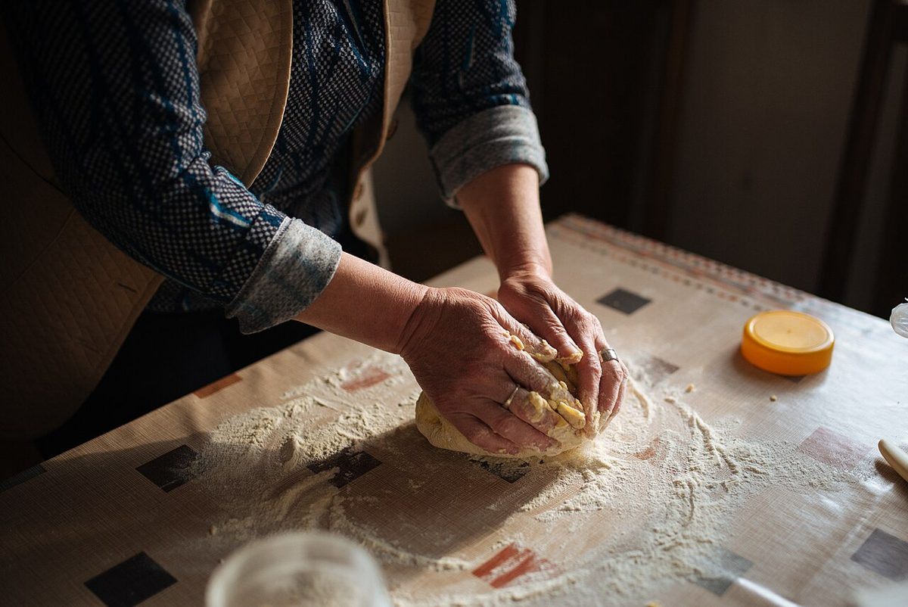
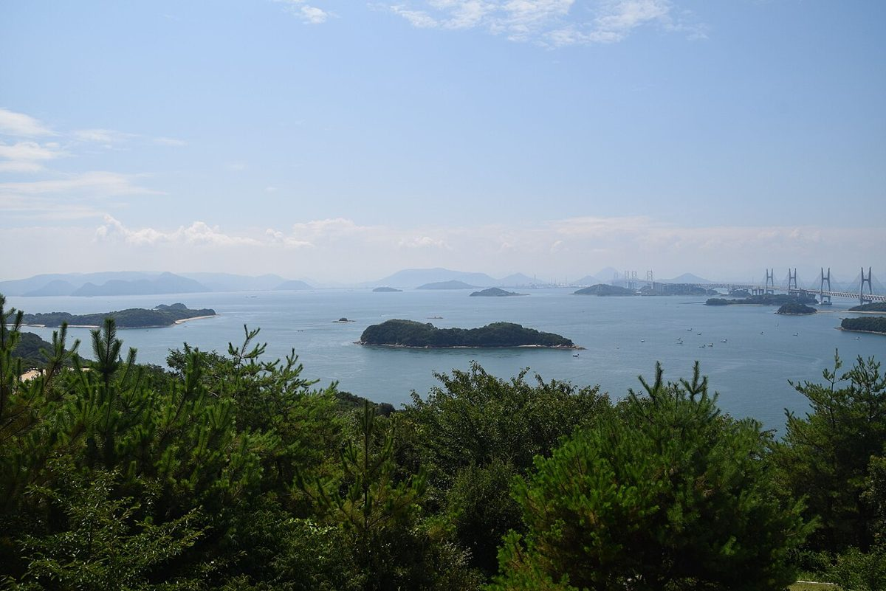

お店について
お店について
ご紹介文
香川県さぬき市寒川町石田東甲1582-2にあるパン屋「CHARMY(チャーミィ)」です。お店の歴史やこだわり、店主のご紹介は、お話を伺い次第こちらに掲載します。現在は準備中です。
お店のこだわり準備中(お問い合わせください)
店主・スタッフ準備中(お問い合わせください)
はじまり準備中(お問い合わせください)

制作側の案
デザインの考え方
店名の響きから、親しみやすく、手に取りやすい雰囲気を連想し、ベリー色とバター色、生成りの紙の色でまとめました。店名の意味や由来はお伺いしていないため、決めつけずにお店の言葉でご説明できる余白を残しています。

地域のイメージ
お店のある香川県さぬき市は、瀬戸内海に面した地域です。写真は瀬戸内の雰囲気を伝えるイメージで、お店の周辺そのものではありません。